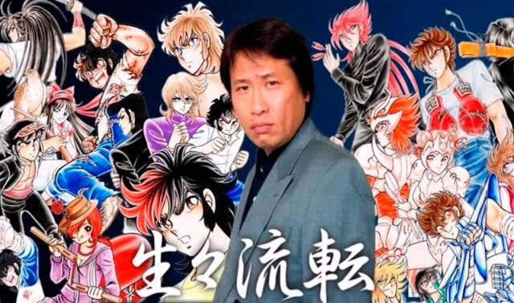
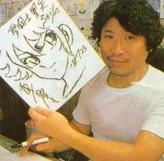

El Creador
Masami Kurumada es un famoso mangaka japonés, nacido en Tokio en el año 1953. Es conocido principalmente por ser el creador del manga y anime de Los Caballeros del Zodiaco, una de las series más icónicas e influyentes de la historia del anime y el manga. Kurumada comenzó su carrera en el mundo del manga a finales de la década de 1970, con la publicación de su primer trabajo, "Ring ni Kakero" (El anillo de los combates). La serie se centraba en el mundo del boxeo y tuvo un gran éxito en Japón.
Sin embargo, el mayor éxito de Kurumada llegó en 1986, con la publicación del manga de Los Caballeros del Zodiaco. La serie se convirtió rápidamente en un fenómeno cultural en Japón y en todo el mundo, y ha sido adaptada en múltiples ocasiones en anime, películas, videojuegos y otros medios. Kurumada es conocido por su estilo de dibujo detallado y su habilidad para crear personajes memorables y emocionantes escenas de acción. Además de Los Caballeros del Zodiaco, ha creado otras series como "Fuma no Kojiro" (Kojiro de los Vientos) y "B't X".

Frases Célebres
"La justicia no se encuentra en las leyes, se encuentra en el corazón."
Ikki de Fenix